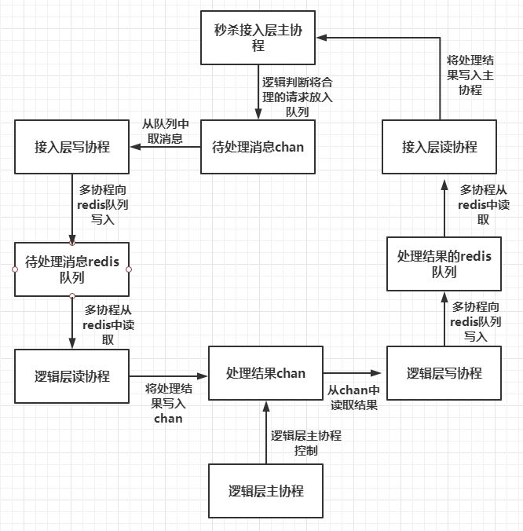
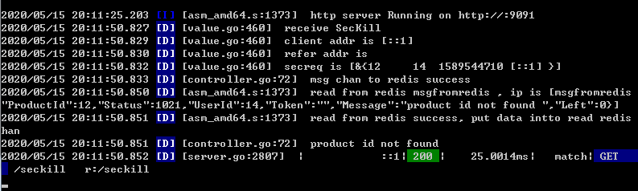
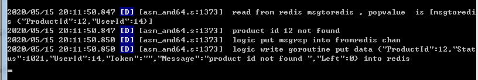
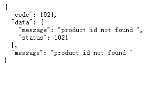

缓冲系统结构
今天谈谈电商秒杀抢购或者高并发集中访问情况下，如何设计稳定高效的缓冲系统。常用的做法是采取逻辑分离，将秒杀功能分化为不同的逻辑进行设计，降低耦合度同时增加缓冲队列降低访问压力。
可以将秒杀抢购功能分为接入层和逻辑层，接入层主要负责基本的判断如token检测，用户检测，请求是否合法等，逻辑层则做主要的逻辑处理和判断。如下图

1 秒杀接入层主协程启动后，启动多个接入层的读协程和写协程，当有请求到来时接入层主协程判断是否合理，将合理的请求写入chan缓冲队列。
2 然后多个接入层的读协程从chan中读取待处理的消息，每个协程操作redis，将待处理的请求判断无误后写入redis待处理请求队列中。
3 逻辑层主协程启动多个逻辑层读协程和写协程，逻辑层读协程从redis的待处理请求队列中读取待处理请求，进行并发处理，然后写入逻辑层chan队列中
4 逻辑层写协程从逻辑层chan取出处理结果写入redis的处理结果队列
5 接入层的读协程并发从redis处理结果队列中取出处理结果，将处理结果写入主协程，从而完成整个消息流程。
消息处理通过接入层和逻辑层分离解耦，压力降低，同时每层带有多个读写协程和自己的chan缓冲队列，实现了异步处理。redis的加入也让高并发处理更稳定和安全。
代码实现
接入层主协程逻辑判断和消息写入chan中，同时监听读协程返回的处理结果
1 | func SecKill(req *config.SecRequest) (data map[string]interface{}, err error) { |
接入层读协程从redis处理结果队列中读取结果
1 | func ReadFromRedis(wg *sync.WaitGroup) { |
接入层写协程向redis待处理请求队列中写入请求
1 | //proxy向redis中写 |
同样的道理，逻辑层也实现了读写协程，和上面类似不做赘述
我们可以看看效果，分别启动接入层和逻辑层进程，然后再浏览器启动输入请求http://localhost:9091/seckill?product_id=12&user_id=14
可以看到两个进程打印的日志信息


浏览器返回处理结果

具体源码地址
https://github.com/secondtonone1/golang-/tree/master/seckill
感谢关注我的公众号